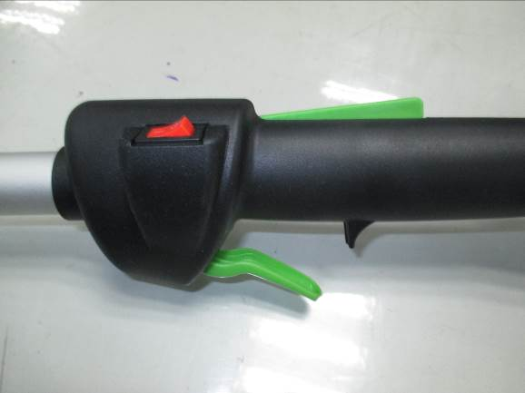

Engage cutting head spool/ Stop
The cutting head spool will be engaged if the operator squeezes the throttle lever and then squeezes the throttle lever release to increase the engine speed.
Throttle lever
Ignition switch
The engine will be stop when depressing the switch in “STOP” position.
Note: This ignition switch will come back to ON position automatically.
Throttle lever release